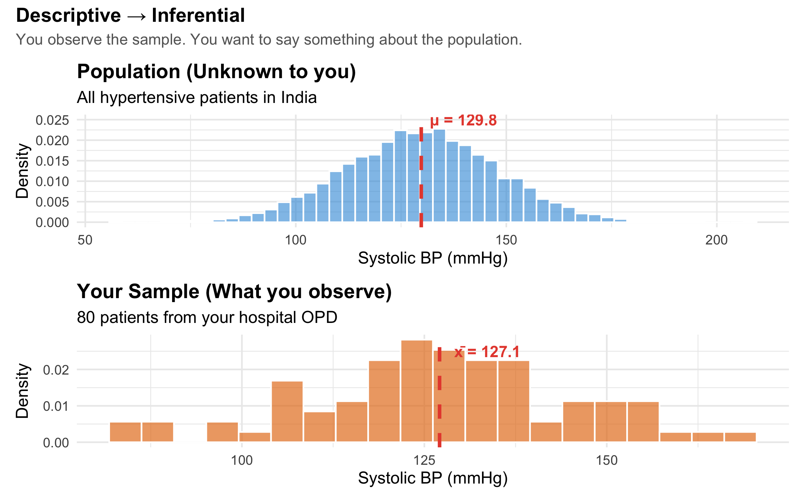
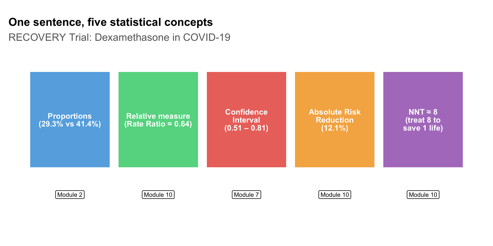
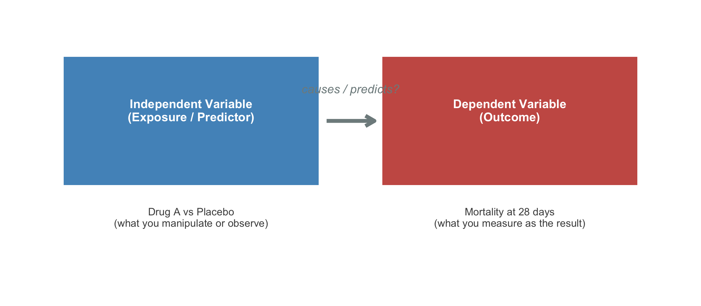

Explain why statistical literacy is essential for clinical practice
Distinguish between qualitative (categorical) and quantitative (numerical) data
Classify variables using the four measurement scales: nominal, ordinal, interval, and ratio
Choose appropriate summary statistics and tests based on measurement scale
Distinguish between descriptive and inferential statistics
Identify independent and dependent variables in a clinical study
Recognise how statistical errors have caused real patient harm
2.2 Clinical Hook: When Statistics Save (or Cost) Lives
The CAST Trial — A Deadly Assumption
In the late 1980s, cardiologists routinely prescribed antiarrhythmic drugs (encainide, flecainide) to suppress premature ventricular contractions (PVCs) after myocardial infarction. The reasoning seemed sound: PVCs predict sudden cardiac death, so suppressing them should reduce mortality.
Nobody tested this assumption rigorously — until the Cardiac Arrhythmia Suppression Trial (CAST) in 1989.
The result was devastating: patients on antiarrhythmic drugs had more than double the mortality compared to placebo (RR = 2.5). The trial was stopped early. It is estimated that at its peak, antiarrhythmic prescribing after MI was killing tens of thousands of patients per year in the US alone — more than the total American casualties in the Vietnam War [1,2].
The lesson: surrogate endpoints (PVC suppression) are not the same as patient-important outcomes (survival). Without proper statistical reasoning and rigorous trial design, well-intentioned treatment can kill.
This course exists because stories like CAST are not rare. From the HRT reversal (observational studies said it prevented heart disease; the randomised WHI trial showed it caused it) to the hydroxychloroquine debacle during COVID-19 (preliminary observational data drove global prescribing before RCTs showed no benefit), the history of medicine is littered with examples where poor statistical reasoning led to patient harm [3,4].
As a clinician, you will read research every week. You will make treatment decisions based on published numbers. This course gives you the tools to read those numbers critically.
2.3 What Is Biostatistics?
Biostatistics is the application of statistical methods to biological, medical, and public health problems. For a clinician, it serves three practical functions:
1. Summarising clinical data. When you look at a patient’s lab reports over time, or compare outcomes across a ward, you are doing descriptive statistics — whether you call it that or not.
2. Drawing conclusions under uncertainty. Medicine is probabilistic. A blood pressure of 142/90 in a single reading doesn’t confirm hypertension. A trial showing p = 0.04 doesn’t prove a drug works. Biostatistics gives you the language and logic to handle this uncertainty.
3. Designing and evaluating research. Whether you conduct research yourself or simply appraise it, understanding study design, bias, and statistical analysis lets you separate reliable evidence from noise.
2.4 Types of Data in Medicine
Before analysing any data, you must know what kind of data you’re working with — because the type determines which statistical methods are appropriate.
Figure 2.1: Classification of data types in medical research
2.5 Measurement Scales: The NOIR Classification
The classification above (nominal, ordinal, discrete, continuous) tells you the shape of your data. But there is a more precise framework — Stevens’ four levels of measurement — that determines exactly which mathematical operations and statistical tests are valid. The mnemonic is NOIR: Nominal, Ordinal, Interval, Ratio.
1. Nominal Scale
Categories with no natural order. You can only count frequencies and test for equality.
Property
Allowed?
Equal / not equal
Yes
Greater / less than
No
Addition / subtraction
No
Multiplication / division
No
Clinical examples: blood group (A, B, AB, O), sex (M, F), marital status, type of fracture (open, closed), ICD diagnosis codes.
Assigning numbers to nominal categories (e.g., Male = 1, Female = 2) does not make them numerical. You cannot say Female is “twice” Male. The numbers are just labels — computing a mean of such codes is meaningless.
2. Ordinal Scale
Categories with a natural order, but the intervals between categories are not equal or measurable.
Property
Allowed?
Equal / not equal
Yes
Greater / less than
Yes
Addition / subtraction
No
Multiplication / division
No
Clinical examples: NYHA functional class (I, II, III, IV), pain severity (mild, moderate, severe), Likert scale responses (strongly disagree → strongly agree), ASA physical status, cancer staging (I, II, III, IV), Glasgow Coma Scale.
Consider NYHA class: the difference between Class I and Class II is not necessarily the same as the difference between Class III and Class IV. Class IV is not “four times as impaired” as Class I. Yet a surprising number of published studies calculate means and standard deviations for ordinal data — this is statistically inappropriate.
3. Interval Scale
Numerical data where differences are meaningful and equal, but there is no true zero point. Zero does not mean “absence of the quantity.”
Property
Allowed?
Equal / not equal
Yes
Greater / less than
Yes
Addition / subtraction
Yes
Multiplication / division
No (ratios are meaningless)
Clinical examples: Temperature in °C or °F (0°C does not mean “no temperature” — it is an arbitrary point), calendar dates, IQ scores.
The ratio test: You can say that 40°C is 2°C more than 38°C (difference is meaningful). But you cannot say 40°C is “twice as hot” as 20°C — because the zero point is arbitrary. On the Fahrenheit scale, the same temperatures would give a completely different “ratio.”
Appropriate statistics: Mean, SD, t-test, ANOVA, Pearson correlation — all valid because differences are meaningful.
4. Ratio Scale
Numerical data with equal intervals AND a true zero point. Zero means complete absence of the quantity. Ratios are meaningful.
The ratio test: A patient with haemoglobin 14 g/dL genuinely has twice the haemoglobin of a patient with 7 g/dL. A weight of 0 kg means no weight at all. Ratios make sense here.
Appropriate statistics: All — mean, SD, geometric mean, coefficient of variation, t-test, ANOVA, Pearson correlation, and any parametric method.
Figure 2.2: The NOIR hierarchy of measurement scales — each level adds permissible operations
Quick Reference: Choosing the Right Statistics
Table 2.1: Measurement scales and their appropriate statistical methods
Scale
True Zero?
Equal Intervals?
Central Tendency
Spread
Example Tests
Clinical Example
Nominal
No
No
Mode
Frequency
Chi-square, Fisher's exact
Blood group, Sex
Ordinal
No
No
Median
IQR, Range
Mann-Whitney U, Kruskal-Wallis, Spearman
NYHA class, GCS, Cancer stage
Interval
No
Yes
Mean, Median
SD, IQR
t-test, ANOVA, Pearson
Temperature (°C), IQ
Ratio
Yes
Yes
Mean, Median, Geometric mean
SD, IQR, CV
t-test, ANOVA, Pearson, CV
Height, Weight, BP, Hb, Glucose
The Interval vs Ratio Distinction — Does It Matter in Practice?
For most parametric tests (t-tests, ANOVA, Pearson correlation), interval and ratio data are treated identically. The distinction matters when you want to make statements involving ratios or proportional change — e.g., “Patient A’s creatinine is twice Patient B’s” (valid for ratio data) vs “Today is twice as hot as yesterday” (invalid for °C, which is interval). In NEET PG exams, the most commonly tested aspect is recognising that temperature in °C is interval (not ratio) and that ordinal data should not be analysed with parametric tests designed for interval/ratio data.
2.6 The Research-to-Bedside Pipeline
Every clinical decision you make as a doctor is (or should be) grounded in evidence. Here’s how statistics fits into each stage:
Figure 2.3: The role of biostatistics at each stage of the evidence pipeline
2.7 Descriptive vs Inferential Statistics
Code
set.seed(42)population<-tibble( bp =rnorm(10000, mean =130, sd =18), group ="Population (N = 10,000)")sample_data<-tibble( bp =sample(population$bp, 80), group ="Your Sample (n = 80)")p1<-ggplot(population, aes(x =bp))+geom_histogram(aes(y =after_stat(density)), bins =50, fill ="#3498db", alpha =0.6, colour ="white")+geom_vline(xintercept =mean(population$bp), colour ="#e74c3c", linewidth =1.2, linetype ="dashed")+annotate("text", x =mean(population$bp)+2, y =0.025, label =paste0("\u03bc = ", round(mean(population$bp), 1)), hjust =0, colour ="#e74c3c", fontface ="bold", size =4)+labs(title ="Population (Unknown to you)", subtitle ="All hypertensive patients in India", x ="Systolic BP (mmHg)", y ="Density")+theme_minimal(base_size =12)+theme(plot.title =element_text(face ="bold"))p2<-ggplot(sample_data, aes(x =bp))+geom_histogram(aes(y =after_stat(density)), bins =20, fill ="#e67e22", alpha =0.7, colour ="white")+geom_vline(xintercept =mean(sample_data$bp), colour ="#e74c3c", linewidth =1.2, linetype ="dashed")+annotate("text", x =mean(sample_data$bp)+2, y =0.025, label =paste0("x\u0304 = ", round(mean(sample_data$bp), 1)), hjust =0, colour ="#e74c3c", fontface ="bold", size =4)+labs(title ="Your Sample (What you observe)", subtitle ="80 patients from your hospital OPD", x ="Systolic BP (mmHg)", y ="Density")+theme_minimal(base_size =12)+theme(plot.title =element_text(face ="bold"))p1/p2+plot_annotation( title ="Descriptive \u2192 Inferential", subtitle ="You observe the sample. You want to say something about the population.", theme =theme( plot.title =element_text(face ="bold", size =14), plot.subtitle =element_text(size =11, colour ="grey40")))

Figure 2.4: Descriptive statistics summarise your data; inferential statistics generalise to the population
Descriptive statistics answer: “What does my data look like?” — means, medians, proportions, graphs.
Inferential statistics answer: “Can I generalise from my sample to the broader population?” — confidence intervals, hypothesis tests, regression models.
A very common error in clinical research is treating descriptive findings as if they are inferential. For example: “In our hospital, 40% of diabetic patients had poor glycaemic control, therefore 40% of diabetic patients in India have poor control.” The leap from sample to population requires inferential methods — not just reporting a number.
2.8 A Real-World Example: Reading a Trial Result
Let’s look at a simplified result from the landmark RECOVERY trial for dexamethasone in COVID-19 [5]:
Among patients on mechanical ventilation, dexamethasone reduced 28-day mortality: 29.3% vs 41.4% (rate ratio 0.64, 95% CI 0.51–0.81).
Even this single sentence contains several statistical concepts you’ll learn in this course:
Code
concepts<-tibble( concept =c("Proportions\n(29.3% vs 41.4%)","Relative measure\n(Rate Ratio = 0.64)","Confidence\nInterval\n(0.51 \u2013 0.81)","Absolute Risk\nReduction\n(12.1%)","NNT \u2248 8\n(treat 8 to\nsave 1 life)"), module =c("Module 2", "Module 10", "Module 7", "Module 10", "Module 10"), x =1:5, y =1)ggplot(concepts, aes(x =x, y =y))+geom_tile(width =0.9, height =0.7, fill =c("#3498db", "#2ecc71", "#e74c3c", "#f39c12", "#9b59b6"), alpha =0.8)+geom_text(aes(label =concept), size =3.2, colour ="white", fontface ="bold", lineheight =0.85)+geom_label(aes(label =module, y =0.45), size =2.5, fill ="white", label.size =0.3)+labs(title ="One sentence, five statistical concepts", subtitle ="RECOVERY Trial: Dexamethasone in COVID-19", x =NULL, y =NULL)+theme_void(base_size =12)+theme( plot.title =element_text(face ="bold", size =13), plot.subtitle =element_text(colour ="grey40"), plot.margin =margin(15, 10, 10, 10))+coord_cartesian(ylim =c(0.2, 1.5))

Figure 2.5: Statistical concepts embedded in a single trial result
By the end of this course, you will be able to dissect any such sentence and critically evaluate whether the claimed treatment effect is real, clinically meaningful, and applicable to your patient.
2.9 Variables and Their Roles
A variable is any characteristic that varies between individuals. In clinical research, distinguishing between variable roles is as important as knowing their measurement scale:
Code
roles<-tibble( box =c("Independent Variable\n(Exposure / Predictor)","Dependent Variable\n(Outcome)"), example =c("Drug A vs Placebo\n(what you manipulate or observe)","Mortality at 28 days\n(what you measure as the result)"), x =c(1, 3), y =1)ggplot(roles)+geom_tile(aes(x =x, y =y, width =1.6, height =0.6), fill =c("#2980b9", "#c0392b"), alpha =0.85)+geom_text(aes(x =x, y =y+0.05, label =box), colour ="white", fontface ="bold", size =3.5, lineheight =0.9)+geom_text(aes(x =x, y =y-0.45, label =example), colour ="grey30", size =3, lineheight =0.9)+annotate("segment", x =1.85, xend =2.15, y =1, yend =1, arrow =arrow(length =unit(0.3, "cm")), colour ="#7f8c8d", linewidth =1.5)+annotate("text", x =2, y =1.15, label ="causes / predicts?", colour ="#7f8c8d", fontface ="italic", size =3.5)+theme_void()+coord_cartesian(xlim =c(0, 4), ylim =c(0.2, 1.5))

Figure 2.6: Independent (exposure) vs dependent (outcome) variables in a clinical study
Confounders: The Hidden Third Variable
A confounder is a variable that is associated with both the exposure and the outcome, distorting the apparent relationship between them. For example, if you find that coffee drinkers have higher rates of lung cancer, the confounder is smoking — coffee drinkers are more likely to smoke, and it’s the smoking that causes cancer, not the coffee.
Identifying and controlling for confounders is one of the most critical skills in clinical research appraisal (covered in depth in Module 14).
Dalgaard P. Introductory Statistics with R. 2nd ed. Springer; 2008. Chapter 1 (if you want to learn R alongside).
Indian Context
Indrayan A, Malhotra RK. Medical Biostatistics. 4th ed. CRC Press; 2018. — Written with Indian medical examples.
2.11 NEET PG Practice MCQs
Q1. A researcher measures the blood groups of 500 patients. Blood group is an example of which measurement scale?
✘ A. Ratio — Ratio scale requires a true zero and equal intervals. Blood group has neither — it is purely categorical with no order.
✔ B. Nominal — Correct! Blood groups (A, B, AB, O) are categories with no inherent order. You cannot say A > B or AB > O. This makes them nominal.
✘ C. Ordinal — Ordinal requires a natural ranking (e.g., mild < moderate < severe). Blood groups have no such ordering.
✘ D. Interval — Interval scale requires equal, measurable differences between values. Blood groups are categories, not numbers on a scale.
Q2. In the CAST trial described above, what was the fundamental statistical error in the original clinical reasoning?
✘ A. The sample size was too small — The CAST trial actually had an adequate sample size. The error was in pre-trial reasoning, not trial design.
✘ B. The randomisation was flawed — The CAST trial was a well-designed, properly randomised RCT. The problem was the assumption that led to widespread prescribing BEFORE the trial.
✔ C. A surrogate endpoint was assumed to predict a patient-important outcome without evidence — Correct! PVC suppression (surrogate) was assumed to reduce mortality (patient-important outcome) without direct evidence. This is the surrogate endpoint fallacy.
✘ D. The p-value threshold was too lenient — The CAST trial used standard statistical thresholds. The fundamental error was logical (surrogate endpoint fallacy), not statistical threshold-related.
Q3. A study reports: "Mean systolic BP in our sample of 200 hypertensive patients was 148 mmHg." This is an example of:
✘ A. Inferential statistics — Inferential statistics would involve generalising beyond the sample, e.g., providing a confidence interval or p-value. Simply reporting a sample mean is descriptive.
✔ B. Descriptive statistics — Correct! Reporting a sample mean summarises the data you have. If the study said ‘the population mean is estimated to be 148 mmHg (95% CI: 144–152)’, THAT would be inferential.
✘ C. Analytical statistics — While ‘analytical statistics’ is sometimes used informally, the correct classification here is descriptive vs inferential. A sample mean without inference is descriptive.
✘ D. Bayesian statistics — Bayesian statistics involves updating prior beliefs with observed data. Simply reporting a mean does not involve any Bayesian framework.
Q4. Temperature measured in degrees Celsius is an example of which measurement scale?
✘ A. Nominal — Nominal data are unordered categories. Temperature is clearly numerical with meaningful ordering and differences.
✘ B. Ordinal — Ordinal data have order but unequal intervals. Temperature in °C has precisely equal intervals (the difference between 36°C and 37°C equals the difference between 39°C and 40°C).
✔ C. Interval — Correct! Temperature in °C has equal intervals but no true zero. 0°C does not mean ‘no temperature’ — it is an arbitrary reference point (freezing point of water). You cannot say 40°C is ‘twice as hot’ as 20°C. This is the classic NEET PG example of interval data.
✘ D. Ratio — Ratio scale requires a true zero (complete absence). 0°C is not the absence of temperature — it is an arbitrary reference. Temperature in Kelvin, however, IS ratio scale because 0 K is absolute zero.
Q5. Which of the following is measured on an ordinal scale?
✘ A. Haemoglobin level (g/dL) — Haemoglobin is measured on a ratio scale — it has equal intervals, a true zero (0 g/dL = no haemoglobin), and meaningful ratios (14 g/dL is twice 7 g/dL).
✘ B. Number of hospital admissions — This is discrete ratio data — countable, with a true zero (0 admissions = none) and meaningful ratios.
✔ C. NYHA functional class (I, II, III, IV) — Correct! NYHA class has a natural order (I < II < III < IV in severity), but the intervals are not equal or measurable. The difference between Class I and II is not the same as between III and IV. This is classic ordinal data.
✘ D. Serum creatinine (mg/dL) — Serum creatinine is ratio scale — it has equal intervals, a true zero, and meaningful ratios.
Q6. In a clinical trial, the variable "treatment group (Drug A vs Placebo)" is the:
✘ A. Dependent variable — The dependent variable is the outcome being measured (e.g., mortality, BP reduction). Treatment group is what the researcher assigns, not what they measure as the result.
✘ B. Confounding variable — A confounder is an uncontrolled variable associated with both exposure and outcome. Treatment group is the deliberately assigned exposure, not a confounder.
✔ C. Independent variable — Correct! The treatment group is what the researcher manipulates (assigns patients to Drug A or Placebo). It is the independent variable, also called the exposure or predictor. The outcome (e.g., mortality) is the dependent variable.
✘ D. Outcome variable — Outcome variable is another name for the dependent variable. Treatment assignment is the exposure, not the outcome.
Q7. A researcher records the number of cigarettes smoked per day by 300 patients. This variable is best classified as:
✘ A. Nominal — Nominal data are unordered categories. Number of cigarettes is a count — it has order, equal intervals, and a true zero.
✘ B. Ordinal — Ordinal data have order but unequal intervals. The difference between 5 and 10 cigarettes is the same as between 15 and 20 — so intervals are equal.
✘ C. Interval — Interval scale lacks a true zero. But 0 cigarettes genuinely means ‘none smoked’ — it is a true zero, making this ratio, not interval.
✔ D. Discrete ratio — Correct! Number of cigarettes is countable (discrete), has equal intervals, a true zero (0 = none), and meaningful ratios (20/day is twice 10/day). It is discrete data on a ratio scale.
2.12 Summary
This module established four foundational ideas:
Statistics is not optional for clinicians. Real patients have been harmed — and continue to be harmed — when doctors lack the skills to critically evaluate evidence.
Data classification matters. The qualitative/quantitative distinction and the NOIR measurement scales (Nominal, Ordinal, Interval, Ratio) determine which statistical operations and tests are valid. Using the wrong method for your data type leads to invalid conclusions.
Interval ≠ Ratio. The key distinction — whether a true zero exists — determines if ratios are meaningful. Temperature in °C (interval) vs height in cm (ratio) is a classic exam question.
Descriptive statistics summarise; inferential statistics generalise. The leap from “what happened in my sample” to “what is true in the population” is the central challenge of biostatistics.
In the next module, we will dive into descriptive statistics — the tools you need to summarise, visualise, and understand clinical data before doing anything else.
Tufte ER. The visual display of
quantitative information. Graphics Press, 2001.
Source Code
---title: "Why Biostatistics Matters"subtitle: "The Clinician's Statistical Toolkit"description: "Understanding why every physician needs statistical literacy — with real examples of how flawed statistics led to patient harm."categories: [foundation, clinical-reasoning]---```{r}#| label: setup#| include: falselibrary(tidyverse)library(kableExtra)library(patchwork)library(scales)source("../R/mcq.R")```::: {.callout-note appearance="minimal"}**Lecture slides for this module:** [Open Slides](../slides/01-why-biostats-slides.html){target="_blank"}:::## Learning ObjectivesBy the end of this module, you will be able to:1. Explain why statistical literacy is essential for clinical practice2. Distinguish between qualitative (categorical) and quantitative (numerical) data3. Classify variables using the four measurement scales: nominal, ordinal, interval, and ratio4. Choose appropriate summary statistics and tests based on measurement scale5. Distinguish between descriptive and inferential statistics6. Identify independent and dependent variables in a clinical study7. Recognise how statistical errors have caused real patient harm---## Clinical Hook: When Statistics Save (or Cost) Lives::: {.clinical-hook}**The CAST Trial — A Deadly Assumption**In the late 1980s, cardiologists routinely prescribed antiarrhythmic drugs (encainide, flecainide) to suppress premature ventricular contractions (PVCs) after myocardial infarction. The reasoning seemed sound: PVCs predict sudden cardiac death, so suppressing them should reduce mortality.Nobody tested this assumption rigorously — until the **Cardiac Arrhythmia Suppression Trial (CAST)** in 1989.The result was devastating: patients on antiarrhythmic drugs had **more than double the mortality** compared to placebo (RR = 2.5). The trial was stopped early. It is estimated that at its peak, antiarrhythmic prescribing after MI was killing **tens of thousands** of patients per year in the US alone — more than the total American casualties in the Vietnam War [@echt1991cast; @moore1995deadly].The lesson: **surrogate endpoints (PVC suppression) are not the same as patient-important outcomes (survival)**. Without proper statistical reasoning and rigorous trial design, well-intentioned treatment can kill.:::This course exists because stories like CAST are not rare. From the **HRT reversal** (observational studies said it prevented heart disease; the randomised WHI trial showed it caused it) to the **hydroxychloroquine debacle** during COVID-19 (preliminary observational data drove global prescribing before RCTs showed no benefit), the history of medicine is littered with examples where poor statistical reasoning led to patient harm [@rossouw2002writing; @recovery2020effect].**As a clinician, you will read research every week. You will make treatment decisions based on published numbers. This course gives you the tools to read those numbers critically.**---## What Is Biostatistics?Biostatistics is the application of statistical methods to biological, medical, and public health problems. For a clinician, it serves three practical functions:**1. Summarising clinical data.** When you look at a patient's lab reports over time, or compare outcomes across a ward, you are doing descriptive statistics — whether you call it that or not.**2. Drawing conclusions under uncertainty.** Medicine is probabilistic. A blood pressure of 142/90 in a single reading doesn't confirm hypertension. A trial showing p = 0.04 doesn't prove a drug works. Biostatistics gives you the language and logic to handle this uncertainty.**3. Designing and evaluating research.** Whether you conduct research yourself or simply appraise it, understanding study design, bias, and statistical analysis lets you separate reliable evidence from noise.---## Types of Data in MedicineBefore analysing any data, you must know what kind of data you're working with — because the type determines which statistical methods are appropriate.```{r}#| label: fig-data-types#| fig-cap: "Classification of data types in medical research"#| fig-height: 6nodes <-tibble(label =c("Data Types","Qualitative\n(Categorical)", "Quantitative\n(Numerical)","Nominal", "Ordinal", "Discrete", "Continuous","e.g., Blood group\n(A, B, AB, O)\nSex (M, F)","e.g., Pain scale\n(mild, moderate, severe)\nASA grade","e.g., Number of\npregnancies\nPulse rate (bpm)","e.g., Height (cm)\nSerum creatinine\nBMI" ),x =c(4, 2, 6, 1, 3, 5, 7, 1, 3, 5, 7),y =c(5, 3.5, 3.5, 2, 2, 2, 2, 0.7, 0.7, 0.7, 0.7),fill =c("#2c3e50","#3498db", "#e74c3c","#85c1e9", "#85c1e9", "#f1948a", "#f1948a","#d5e8f0", "#d5e8f0", "#fad7d3", "#fad7d3" ),text_col =c("white","white", "white","black", "black", "black", "black","black", "black", "black", "black" ),fontsize =c(5, 4, 4, 3.5, 3.5, 3.5, 3.5, 2.8, 2.8, 2.8, 2.8),width =c(2.5, 2.2, 2.2, 1.5, 1.5, 1.5, 1.5, 1.8, 1.8, 1.8, 1.8),height =c(0.7, 0.7, 0.7, 0.6, 0.6, 0.6, 0.6, 0.9, 0.9, 0.9, 0.9))edges <-tibble(x =c(4, 4, 2, 2, 6, 6, 1, 3, 5, 7),xend =c(2, 6, 1, 3, 5, 7, 1, 3, 5, 7),y =c(5-0.35, 5-0.35, 3.5-0.35, 3.5-0.35, 3.5-0.35, 3.5-0.35,2-0.3, 2-0.3, 2-0.3, 2-0.3),yend =c(3.5+0.35, 3.5+0.35, 2+0.3, 2+0.3, 2+0.3, 2+0.3,0.7+0.45, 0.7+0.45, 0.7+0.45, 0.7+0.45))ggplot() +geom_segment(data = edges,aes(x = x, y = y, xend = xend, yend = yend),colour ="#7f8c8d", linewidth =0.8) +geom_tile(data = nodes,aes(x = x, y = y, width = width, height = height, fill = fill),colour ="white", linewidth =0.3) +geom_text(data = nodes,aes(x = x, y = y, label = label, colour = text_col, size = fontsize),lineheight =0.9) +scale_fill_identity() +scale_colour_identity() +scale_size_identity() +coord_cartesian(xlim =c(-0.5, 8.5), ylim =c(0, 5.7)) +theme_void() +theme(plot.margin =margin(10, 10, 10, 10))```---## Measurement Scales: The NOIR ClassificationThe classification above (nominal, ordinal, discrete, continuous) tells you the *shape* of your data. But there is a more precise framework — **Stevens' four levels of measurement** — that determines exactly which mathematical operations and statistical tests are valid. The mnemonic is **NOIR**: Nominal, Ordinal, Interval, Ratio.### 1. Nominal ScaleCategories with **no natural order**. You can only count frequencies and test for equality.| Property | Allowed? ||----------|----------|| Equal / not equal | Yes || Greater / less than | No || Addition / subtraction | No || Multiplication / division | No |**Clinical examples:** blood group (A, B, AB, O), sex (M, F), marital status, type of fracture (open, closed), ICD diagnosis codes.**Appropriate statistics:** Mode, frequency, proportion, chi-square test.::: {.common-mistake}Assigning numbers to nominal categories (e.g., Male = 1, Female = 2) does **not** make them numerical. You cannot say Female is "twice" Male. The numbers are just labels — computing a mean of such codes is meaningless.:::### 2. Ordinal ScaleCategories with a **natural order**, but the intervals between categories are **not equal or measurable**.| Property | Allowed? ||----------|----------|| Equal / not equal | Yes || Greater / less than | Yes || Addition / subtraction | No || Multiplication / division | No |**Clinical examples:** NYHA functional class (I, II, III, IV), pain severity (mild, moderate, severe), Likert scale responses (strongly disagree → strongly agree), ASA physical status, cancer staging (I, II, III, IV), Glasgow Coma Scale.**Appropriate statistics:** Median, IQR, percentiles, Mann-Whitney U test, Kruskal-Wallis test, Spearman correlation.::: {.key-concept}**Why can't you treat ordinal data as numerical?**Consider NYHA class: the difference between Class I and Class II is **not necessarily the same** as the difference between Class III and Class IV. Class IV is not "four times as impaired" as Class I. Yet a surprising number of published studies calculate means and standard deviations for ordinal data — this is statistically inappropriate.:::### 3. Interval ScaleNumerical data where **differences are meaningful and equal**, but there is **no true zero point**. Zero does not mean "absence of the quantity."| Property | Allowed? ||----------|----------|| Equal / not equal | Yes || Greater / less than | Yes || Addition / subtraction | Yes || Multiplication / division | No (ratios are meaningless) |**Clinical examples:** Temperature in °C or °F (0°C does not mean "no temperature" — it is an arbitrary point), calendar dates, IQ scores.**The ratio test:** You *can* say that 40°C is 2°C more than 38°C (difference is meaningful). But you *cannot* say 40°C is "twice as hot" as 20°C — because the zero point is arbitrary. On the Fahrenheit scale, the same temperatures would give a completely different "ratio."**Appropriate statistics:** Mean, SD, t-test, ANOVA, Pearson correlation — all valid because differences are meaningful.### 4. Ratio ScaleNumerical data with **equal intervals AND a true zero point**. Zero means complete absence of the quantity. Ratios are meaningful.| Property | Allowed? ||----------|----------|| Equal / not equal | Yes || Greater / less than | Yes || Addition / subtraction | Yes || Multiplication / division | Yes (ratios are meaningful) |**Clinical examples:** Height (cm), weight (kg), blood pressure (mmHg), serum creatinine (mg/dL), heart rate (bpm), age (years), distance walked in 6MWT, haemoglobin (g/dL), blood glucose (mg/dL).**The ratio test:** A patient with haemoglobin 14 g/dL genuinely has *twice* the haemoglobin of a patient with 7 g/dL. A weight of 0 kg means no weight at all. Ratios make sense here.**Appropriate statistics:** All — mean, SD, geometric mean, coefficient of variation, t-test, ANOVA, Pearson correlation, and any parametric method.### Comparing All Four Scales```{r}#| label: fig-noir-comparison#| fig-cap: "The NOIR hierarchy of measurement scales — each level adds permissible operations"#| fig-height: 5scales_df <-tibble(scale =factor(c("Nominal", "Ordinal", "Interval", "Ratio"),levels =c("Nominal", "Ordinal", "Interval", "Ratio")),equality =c(TRUE, TRUE, TRUE, TRUE),ordering =c(FALSE, TRUE, TRUE, TRUE),differences =c(FALSE, FALSE, TRUE, TRUE),ratios =c(FALSE, FALSE, FALSE, TRUE),example =c("Blood group", "NYHA class", "Temperature (°C)", "Height (cm)"),colour =c("#3498db", "#2ecc71", "#e67e22", "#e74c3c"))# Build a stacked capability chartcap_long <- scales_df %>%pivot_longer(cols =c(equality, ordering, differences, ratios),names_to ="operation", values_to ="allowed") %>%mutate(operation =factor(operation,levels =c("equality", "ordering", "differences", "ratios"),labels =c("= / ≠\n(classify)", "> / <\n(rank)","+ / −\n(differences)", "× / ÷\n(ratios)")) )ggplot(cap_long, aes(x = operation, y = scale)) +geom_tile(aes(fill = allowed), colour ="white", linewidth =2) +geom_text(aes(label =ifelse(allowed, "✓", "✗"),colour = allowed),size =7, fontface ="bold") +scale_fill_manual(values =c("TRUE"="#d4edda", "FALSE"="#f8d7da"),guide ="none") +scale_colour_manual(values =c("TRUE"="#155724", "FALSE"="#721c24"),guide ="none") +labs(title ="Measurement Scales: What Operations Are Permissible?",subtitle ="Each higher scale inherits all capabilities of scales below it",x ="Mathematical Operation",y ="Measurement Scale" ) +theme_minimal(base_size =13) +theme(plot.title =element_text(face ="bold"),plot.subtitle =element_text(colour ="grey40"),axis.text =element_text(size =11),panel.grid =element_blank() )```### Quick Reference: Choosing the Right Statistics```{r}#| label: tbl-scale-reference#| echo: false#| tbl-cap: "Measurement scales and their appropriate statistical methods"ref_tbl <-tibble(`Scale`=c("Nominal", "Ordinal", "Interval", "Ratio"),`True Zero?`=c("No", "No", "No", "Yes"),`Equal Intervals?`=c("No", "No", "Yes", "Yes"),`Central Tendency`=c("Mode", "Median", "Mean, Median", "Mean, Median, Geometric mean"),`Spread`=c("Frequency", "IQR, Range", "SD, IQR", "SD, IQR, CV"),`Example Tests`=c("Chi-square, Fisher's exact","Mann-Whitney U, Kruskal-Wallis, Spearman","t-test, ANOVA, Pearson","t-test, ANOVA, Pearson, CV"),`Clinical Example`=c("Blood group, Sex","NYHA class, GCS, Cancer stage","Temperature (°C), IQ","Height, Weight, BP, Hb, Glucose"))kable(ref_tbl, format ="html", escape =FALSE) %>%kable_styling(bootstrap_options =c("striped", "hover", "condensed"),full_width =TRUE, font_size =14) %>%column_spec(1, bold =TRUE, width ="10%")```::: {.key-concept}**The Interval vs Ratio Distinction — Does It Matter in Practice?**For most parametric tests (t-tests, ANOVA, Pearson correlation), interval and ratio data are treated identically. The distinction matters when you want to make statements involving **ratios or proportional change** — e.g., "Patient A's creatinine is twice Patient B's" (valid for ratio data) vs "Today is twice as hot as yesterday" (invalid for °C, which is interval). In NEET PG exams, the most commonly tested aspect is recognising that temperature in °C is interval (not ratio) and that ordinal data should not be analysed with parametric tests designed for interval/ratio data.:::---## The Research-to-Bedside PipelineEvery clinical decision you make as a doctor is (or should be) grounded in evidence. Here's how statistics fits into each stage:```{r}#| label: fig-pipeline#| fig-cap: "The role of biostatistics at each stage of the evidence pipeline"#| fig-height: 4pipeline <-tibble(stage =factor(c("1. Clinical\nQuestion","2. Study\nDesign","3. Data\nCollection","4. Statistical\nAnalysis","5. Interpretation\n& Publication","6. Clinical\nDecision" ), levels =c("1. Clinical\nQuestion","2. Study\nDesign","3. Data\nCollection","4. Statistical\nAnalysis","5. Interpretation\n& Publication","6. Clinical\nDecision" )),stats_role =c("Formulating a\ntestable hypothesis","Sample size,\nrandomisation,\nblinding","Sampling methods,\ndata quality,\nmissing data","Choosing correct tests,\nestimation,\nhypothesis testing","p-values, CIs,\nclinical significance\nvs statistical significance","Applying evidence\nto individual patients,\nNNT, risk-benefit" ),y =1)ggplot(pipeline, aes(x = stage, y = y)) +geom_tile(aes(fill = stage), height =0.6, width =0.9, alpha =0.85) +geom_text(aes(label = stats_role), size =2.8, lineheight =0.9, vjust =0.5) +scale_fill_brewer(palette ="Blues", direction =1) +labs(x =NULL, y =NULL) +theme_minimal(base_size =12) +theme(legend.position ="none",axis.text.y =element_blank(),axis.text.x =element_text(face ="bold", size =9),panel.grid =element_blank(),plot.margin =margin(20, 10, 10, 10) )```---## Descriptive vs Inferential Statistics```{r}#| label: fig-desc-vs-inf#| fig-cap: "Descriptive statistics summarise your data; inferential statistics generalise to the population"#| fig-height: 5set.seed(42)population <-tibble(bp =rnorm(10000, mean =130, sd =18),group ="Population (N = 10,000)")sample_data <-tibble(bp =sample(population$bp, 80),group ="Your Sample (n = 80)")p1 <-ggplot(population, aes(x = bp)) +geom_histogram(aes(y =after_stat(density)), bins =50,fill ="#3498db", alpha =0.6, colour ="white") +geom_vline(xintercept =mean(population$bp), colour ="#e74c3c",linewidth =1.2, linetype ="dashed") +annotate("text", x =mean(population$bp) +2, y =0.025,label =paste0("\u03bc = ", round(mean(population$bp), 1)),hjust =0, colour ="#e74c3c", fontface ="bold", size =4) +labs(title ="Population (Unknown to you)",subtitle ="All hypertensive patients in India",x ="Systolic BP (mmHg)", y ="Density") +theme_minimal(base_size =12) +theme(plot.title =element_text(face ="bold"))p2 <-ggplot(sample_data, aes(x = bp)) +geom_histogram(aes(y =after_stat(density)), bins =20,fill ="#e67e22", alpha =0.7, colour ="white") +geom_vline(xintercept =mean(sample_data$bp), colour ="#e74c3c",linewidth =1.2, linetype ="dashed") +annotate("text", x =mean(sample_data$bp) +2, y =0.025,label =paste0("x\u0304 = ", round(mean(sample_data$bp), 1)),hjust =0, colour ="#e74c3c", fontface ="bold", size =4) +labs(title ="Your Sample (What you observe)",subtitle ="80 patients from your hospital OPD",x ="Systolic BP (mmHg)", y ="Density") +theme_minimal(base_size =12) +theme(plot.title =element_text(face ="bold"))p1 / p2 +plot_annotation(title ="Descriptive \u2192 Inferential",subtitle ="You observe the sample. You want to say something about the population.",theme =theme(plot.title =element_text(face ="bold", size =14),plot.subtitle =element_text(size =11, colour ="grey40") ) )```**Descriptive statistics** answer: *"What does my data look like?"* — means, medians, proportions, graphs.**Inferential statistics** answer: *"Can I generalise from my sample to the broader population?"* — confidence intervals, hypothesis tests, regression models.::: {.common-mistake}A very common error in clinical research is treating descriptive findings as if they are inferential. For example: "In our hospital, 40% of diabetic patients had poor glycaemic control, *therefore* 40% of diabetic patients in India have poor control." The leap from sample to population requires inferential methods — not just reporting a number.:::---## A Real-World Example: Reading a Trial ResultLet's look at a simplified result from the landmark **RECOVERY trial** for dexamethasone in COVID-19 [@recovery2021dexamethasone]:> Among patients on mechanical ventilation, dexamethasone reduced 28-day mortality: 29.3% vs 41.4% (rate ratio 0.64, 95% CI 0.51–0.81).Even this single sentence contains several statistical concepts you'll learn in this course:```{r}#| label: fig-recovery-concepts#| fig-cap: "Statistical concepts embedded in a single trial result"#| fig-height: 4concepts <-tibble(concept =c("Proportions\n(29.3% vs 41.4%)","Relative measure\n(Rate Ratio = 0.64)","Confidence\nInterval\n(0.51 \u2013 0.81)","Absolute Risk\nReduction\n(12.1%)","NNT \u2248 8\n(treat 8 to\nsave 1 life)" ),module =c("Module 2", "Module 10", "Module 7", "Module 10", "Module 10"),x =1:5,y =1)ggplot(concepts, aes(x = x, y = y)) +geom_tile(width =0.9, height =0.7,fill =c("#3498db", "#2ecc71", "#e74c3c", "#f39c12", "#9b59b6"),alpha =0.8) +geom_text(aes(label = concept), size =3.2, colour ="white",fontface ="bold", lineheight =0.85) +geom_label(aes(label = module, y =0.45), size =2.5,fill ="white", label.size =0.3) +labs(title ="One sentence, five statistical concepts",subtitle ="RECOVERY Trial: Dexamethasone in COVID-19",x =NULL, y =NULL) +theme_void(base_size =12) +theme(plot.title =element_text(face ="bold", size =13),plot.subtitle =element_text(colour ="grey40"),plot.margin =margin(15, 10, 10, 10) ) +coord_cartesian(ylim =c(0.2, 1.5))```By the end of this course, you will be able to dissect any such sentence and critically evaluate whether the claimed treatment effect is real, clinically meaningful, and applicable to your patient.---## Variables and Their RolesA **variable** is any characteristic that varies between individuals. In clinical research, distinguishing between variable roles is as important as knowing their measurement scale:```{r}#| label: fig-variable-roles#| fig-cap: "Independent (exposure) vs dependent (outcome) variables in a clinical study"#| fig-height: 3.5roles <-tibble(box =c("Independent Variable\n(Exposure / Predictor)","Dependent Variable\n(Outcome)"),example =c("Drug A vs Placebo\n(what you manipulate or observe)","Mortality at 28 days\n(what you measure as the result)"),x =c(1, 3),y =1)ggplot(roles) +geom_tile(aes(x = x, y = y, width =1.6, height =0.6),fill =c("#2980b9", "#c0392b"), alpha =0.85) +geom_text(aes(x = x, y = y +0.05, label = box),colour ="white", fontface ="bold", size =3.5, lineheight =0.9) +geom_text(aes(x = x, y = y -0.45, label = example),colour ="grey30", size =3, lineheight =0.9) +annotate("segment", x =1.85, xend =2.15, y =1, yend =1,arrow =arrow(length =unit(0.3, "cm")),colour ="#7f8c8d", linewidth =1.5) +annotate("text", x =2, y =1.15, label ="causes / predicts?",colour ="#7f8c8d", fontface ="italic", size =3.5) +theme_void() +coord_cartesian(xlim =c(0, 4), ylim =c(0.2, 1.5))```### Confounders: The Hidden Third Variable::: {.key-concept}A **confounder** is a variable that is associated with both the exposure and the outcome, distorting the apparent relationship between them. For example, if you find that coffee drinkers have higher rates of lung cancer, the confounder is **smoking** — coffee drinkers are more likely to smoke, and it's the smoking that causes cancer, not the coffee.Identifying and controlling for confounders is one of the most critical skills in clinical research appraisal (covered in depth in Module 14).:::---## Further Learning::: {.resources-box}**Videos**- [StatQuest: Statistics Fundamentals](https://www.youtube.com/playlist?list=PLblh5JKOoLUK0FLuzwntyYI10UQFUhsY9) — Josh Starmer's entire statistics playlist; watch the first 5 videos alongside this module- [Zedstatistics: What is Statistics?](https://www.youtube.com/watch?v=hjZJIVWHnPE) — Excellent 15-minute overview- [Crash Course Statistics #1](https://www.youtube.com/watch?v=zouPoc49xbk) — Engaging, fast-paced introduction- [Types of Data: Nominal, Ordinal, Interval, Ratio](https://www.youtube.com/watch?v=hZxnzfnt5v8) — Scribbr (clear, concise 5-min explainer)**Books**- Bland M. *An Introduction to Medical Statistics*. 4th ed. Oxford University Press; 2015. Chapters 1–2.- Kirkwood BR, Sterne JAC. *Essential Medical Statistics*. 2nd ed. Blackwell; 2003. Chapter 1.- Dalgaard P. *Introductory Statistics with R*. 2nd ed. Springer; 2008. Chapter 1 (if you want to learn R alongside).**Indian Context**- Indrayan A, Malhotra RK. *Medical Biostatistics*. 4th ed. CRC Press; 2018. — Written with Indian medical examples.:::---## NEET PG Practice MCQs::: {.neet-practice}**Q1.** A researcher measures the blood groups of 500 patients. Blood group is an example of which measurement scale?```{r}#| label: mcq-1#| echo: false#| results: asismake_mcq(id ="m1q1",question ="",options =c("Ratio"="Ratio scale requires a true zero and equal intervals. Blood group has neither — it is purely categorical with no order.","answer:Nominal"="Correct! Blood groups (A, B, AB, O) are categories with no inherent order. You cannot say A > B or AB > O. This makes them nominal.","Ordinal"="Ordinal requires a natural ranking (e.g., mild < moderate < severe). Blood groups have no such ordering.","Interval"="Interval scale requires equal, measurable differences between values. Blood groups are categories, not numbers on a scale." ))```---**Q2.** In the CAST trial described above, what was the fundamental statistical error in the original clinical reasoning?```{r}#| label: mcq-2#| echo: false#| results: asismake_mcq(id ="m1q2",question ="",options =c("The sample size was too small"="The CAST trial actually had an adequate sample size. The error was in pre-trial reasoning, not trial design.","The randomisation was flawed"="The CAST trial was a well-designed, properly randomised RCT. The problem was the assumption that led to widespread prescribing BEFORE the trial.","answer:A surrogate endpoint was assumed to predict a patient-important outcome without evidence"="Correct! PVC suppression (surrogate) was assumed to reduce mortality (patient-important outcome) without direct evidence. This is the surrogate endpoint fallacy.","The p-value threshold was too lenient"="The CAST trial used standard statistical thresholds. The fundamental error was logical (surrogate endpoint fallacy), not statistical threshold-related." ))```---**Q3.** A study reports: \"Mean systolic BP in our sample of 200 hypertensive patients was 148 mmHg.\" This is an example of:```{r}#| label: mcq-3#| echo: false#| results: asismake_mcq(id ="m1q3",question ="",options =c("Inferential statistics"="Inferential statistics would involve generalising beyond the sample, e.g., providing a confidence interval or p-value. Simply reporting a sample mean is descriptive.","answer:Descriptive statistics"="Correct! Reporting a sample mean summarises the data you have. If the study said 'the population mean is estimated to be 148 mmHg (95% CI: 144\u2013152)', THAT would be inferential.","Analytical statistics"="While 'analytical statistics' is sometimes used informally, the correct classification here is descriptive vs inferential. A sample mean without inference is descriptive.","Bayesian statistics"="Bayesian statistics involves updating prior beliefs with observed data. Simply reporting a mean does not involve any Bayesian framework." ))```---**Q4.** Temperature measured in degrees Celsius is an example of which measurement scale?```{r}#| label: mcq-4#| echo: false#| results: asismake_mcq(id ="m1q4",question ="",options =c("Nominal"="Nominal data are unordered categories. Temperature is clearly numerical with meaningful ordering and differences.","Ordinal"="Ordinal data have order but unequal intervals. Temperature in \u00b0C has precisely equal intervals (the difference between 36\u00b0C and 37\u00b0C equals the difference between 39\u00b0C and 40\u00b0C).","answer:Interval"="Correct! Temperature in \u00b0C has equal intervals but no true zero. 0\u00b0C does not mean 'no temperature' \u2014 it is an arbitrary reference point (freezing point of water). You cannot say 40\u00b0C is 'twice as hot' as 20\u00b0C. This is the classic NEET PG example of interval data.","Ratio"="Ratio scale requires a true zero (complete absence). 0\u00b0C is not the absence of temperature \u2014 it is an arbitrary reference. Temperature in Kelvin, however, IS ratio scale because 0 K is absolute zero." ))```---**Q5.** Which of the following is measured on an ordinal scale?```{r}#| label: mcq-5#| echo: false#| results: asismake_mcq(id ="m1q5",question ="",options =c("Haemoglobin level (g/dL)"="Haemoglobin is measured on a ratio scale \u2014 it has equal intervals, a true zero (0 g/dL = no haemoglobin), and meaningful ratios (14 g/dL is twice 7 g/dL).","Number of hospital admissions"="This is discrete ratio data \u2014 countable, with a true zero (0 admissions = none) and meaningful ratios.","answer:NYHA functional class (I, II, III, IV)"="Correct! NYHA class has a natural order (I < II < III < IV in severity), but the intervals are not equal or measurable. The difference between Class I and II is not the same as between III and IV. This is classic ordinal data.","Serum creatinine (mg/dL)"="Serum creatinine is ratio scale \u2014 it has equal intervals, a true zero, and meaningful ratios." ))```---**Q6.** In a clinical trial, the variable \"treatment group (Drug A vs Placebo)\" is the:```{r}#| label: mcq-6#| echo: false#| results: asismake_mcq(id ="m1q6",question ="",options =c("Dependent variable"="The dependent variable is the outcome being measured (e.g., mortality, BP reduction). Treatment group is what the researcher assigns, not what they measure as the result.","Confounding variable"="A confounder is an uncontrolled variable associated with both exposure and outcome. Treatment group is the deliberately assigned exposure, not a confounder.","answer:Independent variable"="Correct! The treatment group is what the researcher manipulates (assigns patients to Drug A or Placebo). It is the independent variable, also called the exposure or predictor. The outcome (e.g., mortality) is the dependent variable.","Outcome variable"="Outcome variable is another name for the dependent variable. Treatment assignment is the exposure, not the outcome." ))```---**Q7.** A researcher records the number of cigarettes smoked per day by 300 patients. This variable is best classified as:```{r}#| label: mcq-7#| echo: false#| results: asismake_mcq(id ="m1q7",question ="",options =c("Nominal"="Nominal data are unordered categories. Number of cigarettes is a count \u2014 it has order, equal intervals, and a true zero.","Ordinal"="Ordinal data have order but unequal intervals. The difference between 5 and 10 cigarettes is the same as between 15 and 20 \u2014 so intervals are equal.","Interval"="Interval scale lacks a true zero. But 0 cigarettes genuinely means 'none smoked' \u2014 it is a true zero, making this ratio, not interval.","answer:Discrete ratio"="Correct! Number of cigarettes is countable (discrete), has equal intervals, a true zero (0 = none), and meaningful ratios (20/day is twice 10/day). It is discrete data on a ratio scale." ))```:::---## SummaryThis module established four foundational ideas:1. **Statistics is not optional for clinicians.** Real patients have been harmed — and continue to be harmed — when doctors lack the skills to critically evaluate evidence.2. **Data classification matters.** The qualitative/quantitative distinction and the NOIR measurement scales (Nominal, Ordinal, Interval, Ratio) determine which statistical operations and tests are valid. Using the wrong method for your data type leads to invalid conclusions.3. **Interval ≠ Ratio.** The key distinction — whether a true zero exists — determines if ratios are meaningful. Temperature in °C (interval) vs height in cm (ratio) is a classic exam question.4. **Descriptive statistics summarise; inferential statistics generalise.** The leap from "what happened in my sample" to "what is true in the population" is the central challenge of biostatistics.In the next module, we will dive into **descriptive statistics** — the tools you need to summarise, visualise, and understand clinical data before doing anything else.---## References::: {#refs}:::